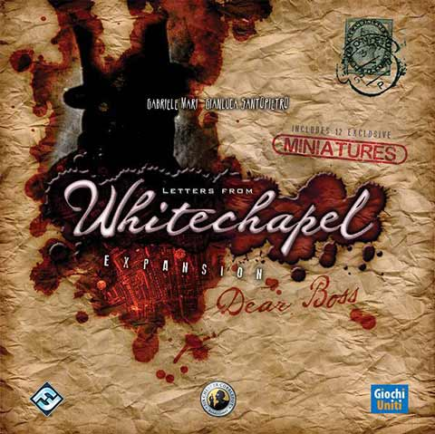

In this Letters from Whitechapel: Dear Boss review, D and Will take a look at the first and only expansion for this board game from designers Gabriele Mari and Gianluca Santopietro. Published by Fantasy Flight Games and Sir Chester Cobblepot, Dear Boss expands on the base game’s hidden movement gameplay by adding a number of new cards and abilities to the proceedings. How much do the Policeman, Suspect, and Victim cards improve and/or change Letters from Whitechapel? The guys hope to answer that in the review below.

D reviews Letters from Whitechapel: Dear Boss
 (Author’s
note: this review is meant to accompany our gameplay video and will not
go in-depth on the game’s rules. If you’re interested in learning how
the game is played, please watch the video. It’s not bad.)
(Author’s
note: this review is meant to accompany our gameplay video and will not
go in-depth on the game’s rules. If you’re interested in learning how
the game is played, please watch the video. It’s not bad.)
You may have noticed by now that Letters from Whitechapel and Whitehall Mystery are both among our favorite games here at Board Crazy. They’re excellent games, but they’re also well-suited for our group dynamic. We – and I don’t just mean the three of us, but our entire friend group – are a bunch of fairly competitive individuals who may or may not relish in outsmarting one another, so it’s good that we have healthy outlets like these games to keep things… civil. Okay, maybe we’re not quite so terrible as I’m making us sound, but it’s true that these games work for us. So when an expansion for Letters from Whitechapel came out, buying it seemed like a no-brainer. But is it worth it for you, dear reader? That depends.
I’m reasonably confident that the Dear Boss expansion isn’t a great value proposition. The retail price is about $20-$30 as far as I know, and that will get you a new Jack screen, a handful of new mechanics detailed on a couple large sheets of paper, they’re respective components, some plastic miniatures that can be used in place of some of the original wooden ones, and a huge box. I’m not joking about the box. It’s so absurdly large that it might make you think that you’re getting the entire base game along with the expansion. This might come in handy if you want to just throw all the original stuff in this new box too, but its dimensions are not exactly convenient for your average shelf. As for the new stuff, the miniatures are a disappointment – they look and feel cheap. The women are all the same, and the cops are the same mold in five different colors. The base game’s wooden tokens may not be shaped like humans, but they look and feel better than these new alternatives. The new Jack screen is a definite improvement over the original, at least.
Fortunately, the new rule options are mostly pretty good. I don’t know that I’d recommend using all of them at once, like we did in the video, as that can make things sort of chaotic in a way that I’m personally not a big fan of, but individually I think they’re all worthwhile. The Suspect cards are probably my favorite of the bunch. These come in different difficulties and provide restrictions to the Jack player in terms of their locations and where they can kill. While they’re designed to be a boon to the police, the details are only known to Jack and it’s up to that player to secretly adapt their strategy accordingly. The Potential Victim cards are good too, although their implementation can be slightly awkward. These provide advantages for Jack every round based on where he killed and can throw some interesting wrenches into the police officers’ searches. All of these new cards also provide some background information about the real-life individuals they’re depicting, which adds an inessential-but-appreciated bit of flavor and context to the components.
The Policeman cards, or constables, are probably my least favorite of the major new options. These give the police players special abilities similar to the one-use abilities found in Whitehall Mystery. However, these are only active when the detective of the corresponding color is the head of investigation. One issue I have with them is that the rules governing them are not thoroughly explained. Whether they can be used just once like in Whitehall or an unlimited number of times over one night is not mentioned on the provided sheet. Also, they’re not all created equal. The green and yellow constables are less powerful than the other three, which is sure to be disappointing in a game where five separate people are playing as the investigators. They’re not bad, but it feels to me like a little bit of extra work could have been done to improve them further.
Overall, whether or not you should buy Dear Boss really comes down to how often you play Letters from Whitechapel. If you’re like us and it’s something you play pretty often, then I think this expansion is worth getting, although you may want to wait for a sale. The new options are mostly interesting enough to justify the purchase. If you’re someone who only plays it rarely, however, I might give this a pass. The base game is still very fun and replayable without any additions.
D’s Rating: Three Stars out of Five.
Will reviews Letters from Whitechapel: Dear Boss
 Given how much we love this series, it was only a matter of time before we got around to playing Letters from Whitechapel’s first and only add-on, the Dear Boss expansion. With that level of excitement to experience everything Letters has to offer, I admit that I came into this expansion with some expectations. For that reason, I think Dear Boss
is an even bigger disappointment to me, even though I can objectively
state that, expectations or no expectations, this expansion is subpar.
There’s just not enough there to justify its existence, and what is
there feels so tacked on, it’s kind of a bummer.
Given how much we love this series, it was only a matter of time before we got around to playing Letters from Whitechapel’s first and only add-on, the Dear Boss expansion. With that level of excitement to experience everything Letters has to offer, I admit that I came into this expansion with some expectations. For that reason, I think Dear Boss
is an even bigger disappointment to me, even though I can objectively
state that, expectations or no expectations, this expansion is subpar.
There’s just not enough there to justify its existence, and what is
there feels so tacked on, it’s kind of a bummer.
To start, Dear Boss comes in a pretty large box, which I think was a deliberate but foolish design choice. Sure, it did raise my anticipation and desire to see under the hood, so to speak, but when I discovered that the innards were only a handful of cards and some plastic minis, I found myself shaking my head. Why do this? A box half the size would’ve more than got the job done. Yes, the artwork on the cards is really attractive, and the minis are more detailed than the base game’s. Then again, the base game’s pawns are wooden, which I prefer. I’ve seen some people go as far as to call Dear Boss a “cash-grab” and after seeing its box and meager contents, I understand why that opinion exists.
Now, if the gameplay were worthwhile, that would’ve dissuaded me from at all considering Dear Boss a cash-grab. Unfortunately, the additions that this expansion makes to the core gameplay feel utterly tacked on, as if they’re only half of a completed thought. For instance, the Policeman cards are an intriguing idea, given that they provide extra options for the good guys. Unfortunately, most of them contain powers that were already available to the players through the rulebooks, like “Rushing”, “Area Arrests”, and the newer “Cry Havoc” ability. I guess these cards are a way of balancing those abilities in a way so that the detective players only have access to them part of the time. I don’t know though, that’s a pretty thin reason for them to exist. For the most part, they’re redundant.
It doesn’t get any better with the Potential Victim cards. In theory, these cards add a bit of color and narrative to the game, but not many people are going to play Letters from Whitechapel that way. They also boost Jack’s chance of victory, since some of their abilities are rather potent, although inconsistently so. We ran into some issues with these cards in Night 3, when there are two victims instead of one. We ended up drawing a Victim card that prevented the detective players from being able to execute an arrest until they found a clue. Problem was, Jack doesn’t move during the first round Night 3, so we (the police) couldn’t possibly execute an arrest even though we knew the two locations he might be in. It was frustrating, perhaps by design, but I couldn’t shake the feeling that this was an oversight that ended up benefiting the Jack player entirely too much.
On the other hand, the Jack Suspect Cards are clever and fun additions to the gameplay. They shoehorn the Jack player into certain areas throughout the game, restricting the locations of the hideout and murder sites to predetermined sectors of the board. I saw how this changed the Jack player’s strategy in the moment, and it allowed for a different gameplay experience than usual. They also provide a lot of information about the actual, real life suspect, which adds to Letters from Whitechapel’s immersion and story. And there are a lot of them, so that also helps replayability.
Breaking down the cards leads me to Dear Boss’ most prominent hiccup – the rulebook is simply awful. In fact, to call it a rulebook is too kind; it’s a scant two-sided sheet. It didn’t need to be any longer actually, but the written content on it is so inadequate at explaining the most important stuff. There’s plenty of information about the new cards and what they’re supposed to do, but there’s barely any description of how to implement them. The Potential Victim cards come to mind – are we supposed to draw two of them during Night 3? Are they discarded after their use or are they re-added to the deck? These are only some of questions that continue to bother us. Also, there’s this new detective/constable dynamic that isn’t explained at all. I think this addition was made just so that the new “Cry Havoc” ability could be integrated into the game. Gosh, I hate the Cry Havoc ability too – it’s bewildering and unnecessary. And the fact that only three specifically colored cops can use the ability makes it harder to utilize than it has to be.
Thinking about it, the Dear Boss expansion might be one of the least seamless additions to any game’s gameplay I’ve ever experienced as a board gamer. This is entirely due to its poorly written rule sheet and mechanically redundant components. Letters from Whitechapel‘s core rules are so polished and its gameplay so entertaining that it’s easily my preference, and if I wanted a somewhat different experience with altered mechanics, I’d just play its sequel, Whitehall Mystery. That game offers up some of the same gameplay additions (i.e. specific police abilities), but it explains and incorporates them so much better. I think that fact also magnifies Dear Boss’ flaws. If it weren’t for the Jack Suspect Cards, I don’t think I’d ever recommend this expansion to anyone. But since they’re included, I would recommend Dear Boss to the most passionate fans of this series, although I do it reluctantly.
I give Letters from Whitechapel: Dear Boss a: C
Letters from Whitechapel: Dear Boss – Board Crazy’s Ratings
Leave a Reply
You must be logged in to post a comment.